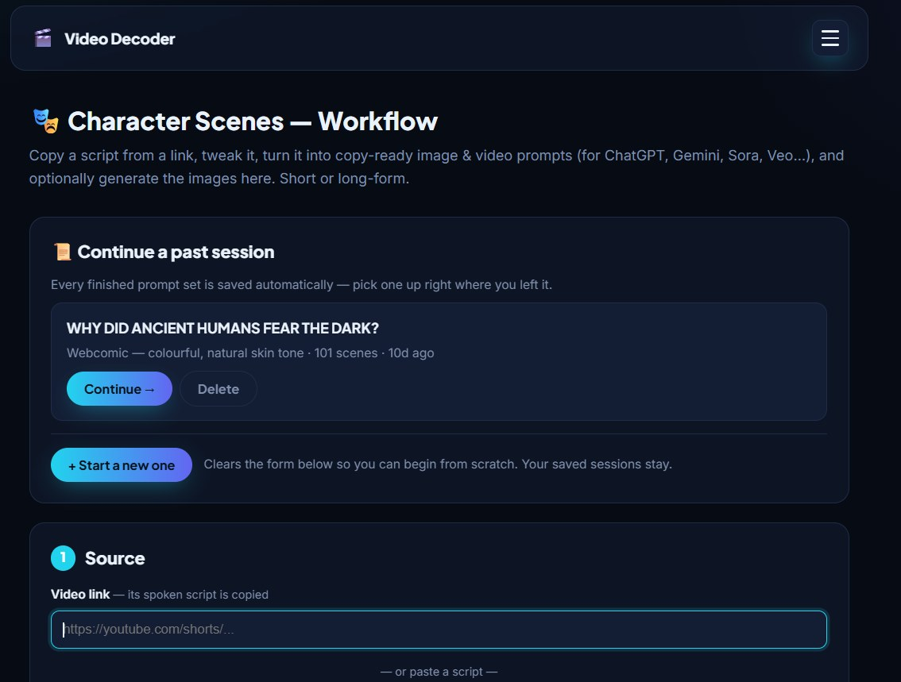
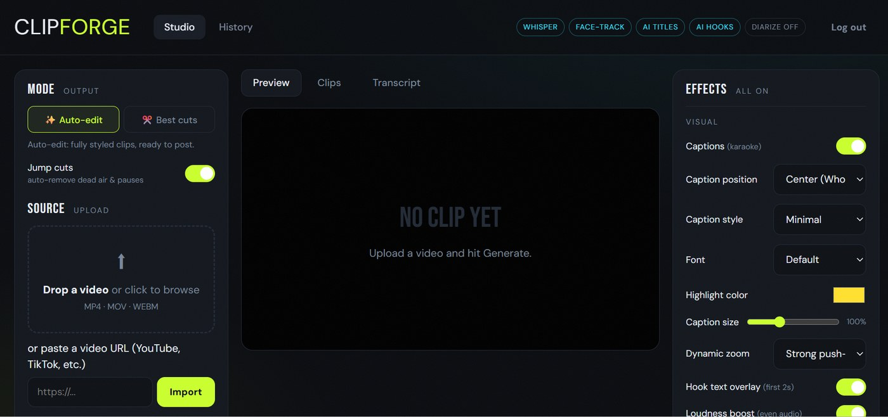
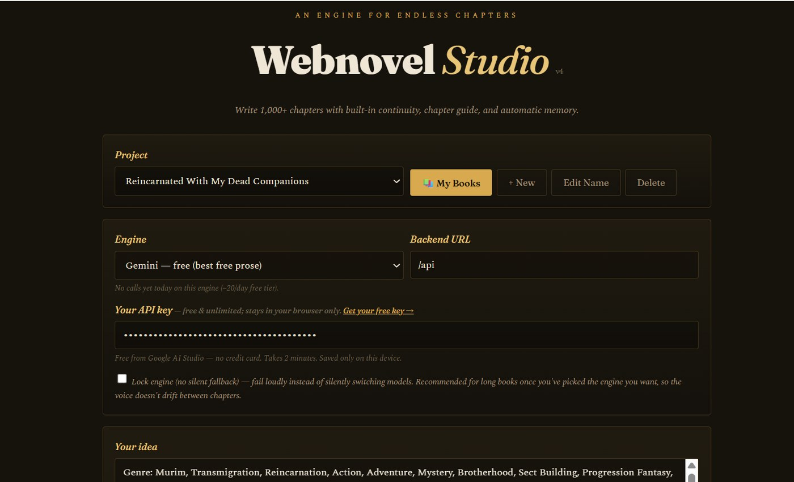

Digital tools para sa mga naghahanapbuhay online
Tama na 'yang kaka-"paano po ba 'to?" — dito ka na. Mga AI tool na sinubukan at ginagamit na, hindi teorya lang. Kahit anong niche mo, kahit kaninong character gusto mong gayahin — kaya nito. Simulan mo sa unang app namin sa ibaba.
Tingnan ang App →Ang bagong ayos ng paggawa ng content — gawa, post, kita, lahat sa isang app.
Simulan na →Perfect para sa YTA. Mula sa topic o video link, diretso na sa buong script, mga larawan, at boses — kahit anong niche, kayang-kaya, kasi kaya niyang gayahin ang character ng kahit kaninong reference image o screenshot.

Ito ang makikita mo sa loob — naka-save lahat ng ginawa mo, tuloy-tuloy lang.
I-click lang para direkta kang maka-message sa amin sa Facebook — babae, lalaki, sino man, kaya mo 'to, tol.
Order Ngayon — ₱599Perfect para sa Whop clipping. I-upload lang ang mahabang podcast o stream — awtomatiko nang gagawa ng maraming viral-ready na clips, may captions na naka-burn, AI-generated na titles, at face tracking. Ito na ang gagawa ng trabaho habang ikaw ang kikita.

Ito ang makikita mo sa loob — lahat ng kontrol nasa isang screen lang.
I-click lang para direkta kang maka-message sa amin sa Facebook — para sa mga gustong mag-Whop clipping o ibang clipping campaigns.
Order Ngayon — ₱899Sumulat ng buong webnovel gamit ang AI — hanggang 1,000+ chapters, at natatandaan pa rin ang nangyari 300 chapters ang nakaraan. Ready i-post sa Webnovel, Dreame, o Scribble: may built-in na anti-AI-writing pass na nag-aalis ng mga tell-tale na pattern ng AI bago mo pa i-publish. Plus 10 sikat na story structure na susundan ng AI base sa sarili mong premise — hindi kopya.

Ito ang makikita mo sa loob — pumili ng engine, ilagay ang idea mo, sulat na.
Available sa Gumroad — instant access agad pagkatapos bayaran, walang hintayan.
Bilhin Ngayon — ₱2,199